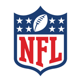

2026 시즌 · 6주차 · 주간 리캡
NFL 6주차 리캡
10.16 – 10.20 (KST) · ← 전체 주차
램스 주간 브리핑
경기 결과 없이 로스터·부상·일정만
로스터 이동
영입
K 브랜던 맥매너스 영입 (10/21)베테랑 13년 차 · 올 시즌 세 번째 키커
IR
K 블레이크 그루피 — 무릎 ACL 파열, 시즌 아웃
방출
K 해리슨 메비스 방출 (10/15)
부상 리포트
시즌아웃
NT 푸나 포드 — 삼두근 파열 (IR)
6~10주
WR 더밴테 애덤스 — 햄스트링 파열 (IR)
수 주
DE 코비 터너 — 사타구니 염좌, IR 유력
미정
CB 트렌트 맥더피 — 사타구니, 주말에 출전 결정
IR
OLB 마일스 개릿 — 무릎, 이번 주 훈련 복귀 X
다음 경기
 LAR@
LAR@ LV
LV10/26 (월) 오전 5:25 KST
얼리전트 스타디움 · FOX
6주차 스코어보드
일요일 NYJ19–26
NYJ19–26 NE
NE
NYJ19–26NE일요일 NO34–27
NO34–27 NYG
NYG
NO34–27NYG🐏 램스 경기는 스포일러 방지로 숨김
순위 흐름
🙈 순위는 가려 뒀어요
램스 이번 주 경기 결과를 아직 확인하지 않았다면 순위를 보지 마세요.
🚑 주요 부상
 PHI
PHIQB 제일런 허츠 — 혈전(폐색전증), IR · 시즌 아웃 전망출처 →
 WAS
WASWR 테리 매클로린 — 슬개건 파열, 시즌 아웃출처 →
 SF
SFWR 마이크 에반스 — 아킬레스건염 악화, 파열 아님 · 바이 후 복귀 유력출처 →
📰 빅뉴스
 HOU
HOU마빈 해리슨 주니어 트레이드 영입 (2027 2R 지명권 등 대가)출처 →
NYGJ.J. 매카시 7주차 선발 QB 확정 · RB 나지 해리스 방출출처 →

NFL트레이드 마감: 11/11 (수) 오전 6시 KST출처 →
7주차 주목 경기
모든 시간 한국 시간 (KST)
10/23 (금)
09:15
NE CHI
CHI목요일 밤4승 2패 팀끼리 맞대결
10/25 (일)
22:30
 PITNO
PITNO파리프랑스 생드니
10/26 (월)
02:00
SF ATL
ATL무패 49ers 원정
10/26 (월)
02:00
NYGHOU매카시 자이언츠 첫 선발
10/26 (월)
05:25
 GB
GB DET
DETNFC 북부 맞대결
10/26 (월)
05:25
LARLV🐏램스 경기
10/26 (월)
09:20
 KC
KC SEA
SEA일요일 밤무패 치프스
10/27 (화)
09:15
 DALPHI
DALPHI월요일 밤NFC 동부 라이벌전
휴식 (BYE)
 BUF빌스
BUF빌스 LAC차저스WAS커맨더스
LAC차저스WAS커맨더스⚠️ 외부 기사·영상 페이지에는 다른 경기(램스 포함) 결과가 함께 보일 수 있어요.
램스 경기 결과 보기 (스포일러)
 ARI18–16LAR
ARI18–16LAR10/19 (월) KST · SoFi 스타디움
램스 2승 4패 · NFC 서부 최하위
램스 2승 4패 · NFC 서부 최하위
- 카디널스 K 채드 라일랜드 필드골 6/6, 마지막 킥이 결승 FG (카디널스는 레드존 0/5, TD 없음)
- 램스가 막판 TD로 리드를 잡았지만 브리셋 드라이브 → 결승 FG 허용
- K 그루피 1쿼터 부상 이탈 → 2점 시도·펀터 이선 에반스가 PAT, 4다운 실패 2회
- 카디널스 수비 QB 압박 18회·색 2개, 램스 총 286야드